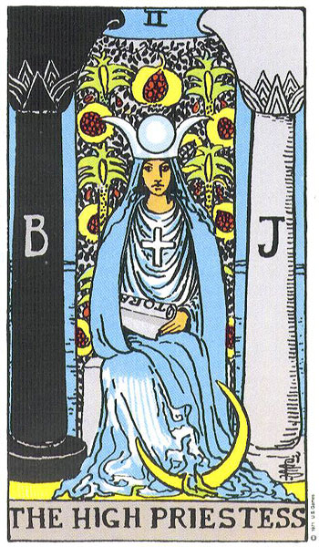

Луна растёт · 16 мая
Luna · I.0
Luna
Зеркало Таро
Карта дня
Luna
XXII · ARCANA

прикоснись — и Луна покажет, что выбрала тебе на сегодня
Верховная Жрица
ответ внутри тебя, а не в шуме извне. Слушай интуицию, доверяй тишине.
Открыть путь
Расклад на вопрос
три карты — прошлое, настоящее, грядущее
→
Память
Дневник Луны
расклады, что уже звучали
→